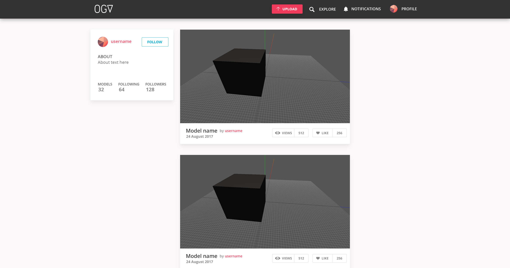
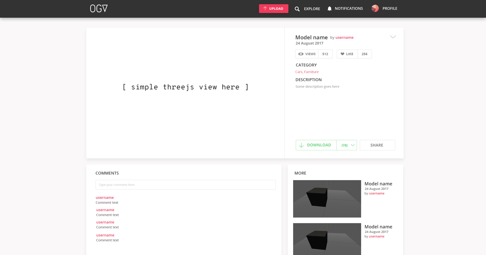
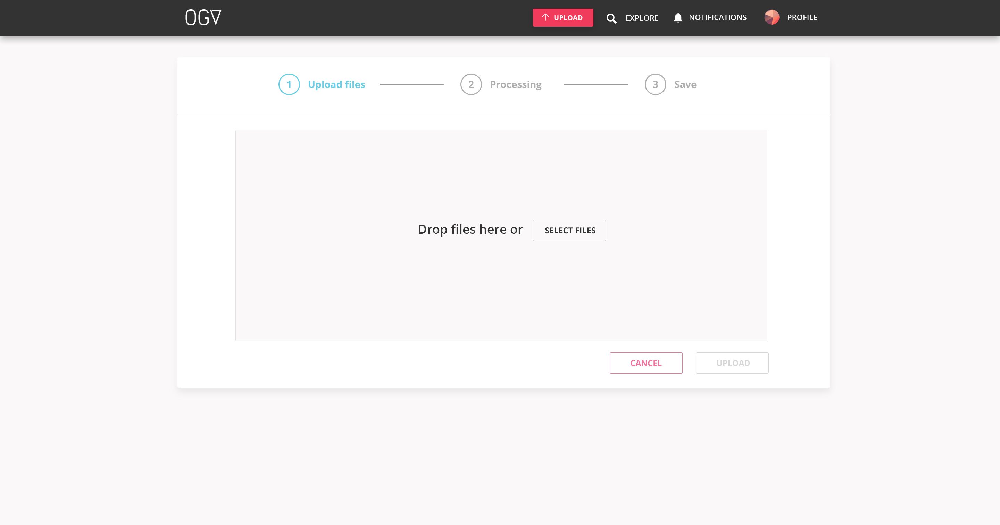
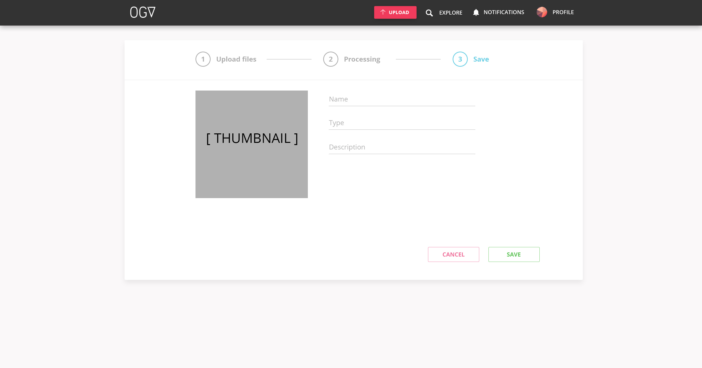

Online Geometry Viewer Update
Personal Info
Name: Oleksandr Dubenko
Email: odybenko@gmail.com
IRC: sniok
Phone: +48577173100
Brief Summary
This project aims to improve Online Geometry Viewer in different ways: UI update, code quality and improved model importing.
Detailed summary
User Interface Developing and applying new style Remake feed view Add simple model view Remake upload view Improve advanced model view Code structure Use meteor’s recommended code structure Configure ESLint Add comments (JSDoc) Model importing Import .obj with colors Add support for .obj upload
User Interface
Developing and applying new style
Develop and user new consistent style. OGV’s UI have a lot of room for improvements. I want to i mprove and remake some parts of user interface to create the best user experience.
Remake feed view
Current profile and feed view should be improved. Most of it needs to be remade. Improve simple view for displaying user feed. Simple profile card on the left, actual feed in the middle, and recommended users on the right (not shown). This view will be same for profile.

Add simple model view
Currently you can’t quickly preview model, download and leave comment. Proposed view provides simple interactive preview of the model, information about model and comments. 
Remake upload view
Currently after selecting the file from computer it shows simultaneously progress bar and editing view for model info which may be confusing. Separating all steps of model upload and showing current step at the top will improve user experience. Remake upload process into three steps: Upload -> File processing -> Editing and saving. Generate model preview at this step.


Improve advanced model view
view, download, social buttons and color settings view. In this view files only ) and change scene settings.
Proposed model view